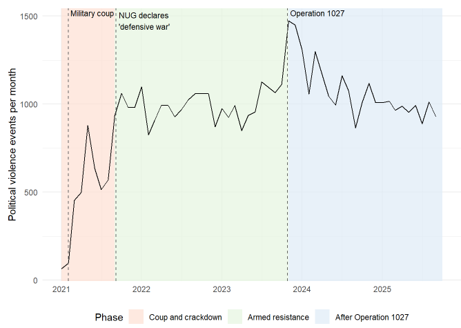
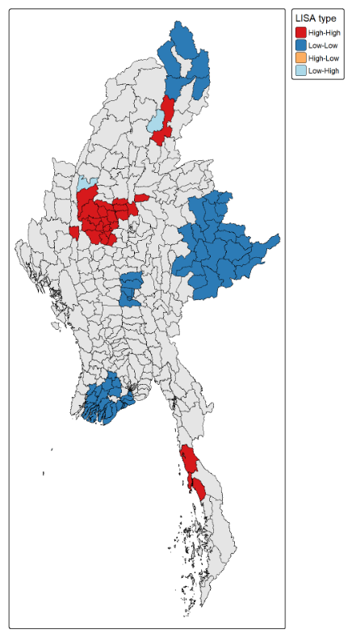
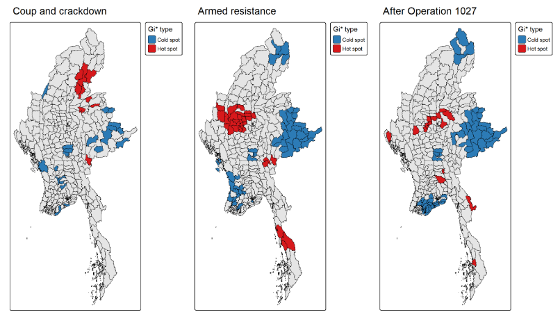
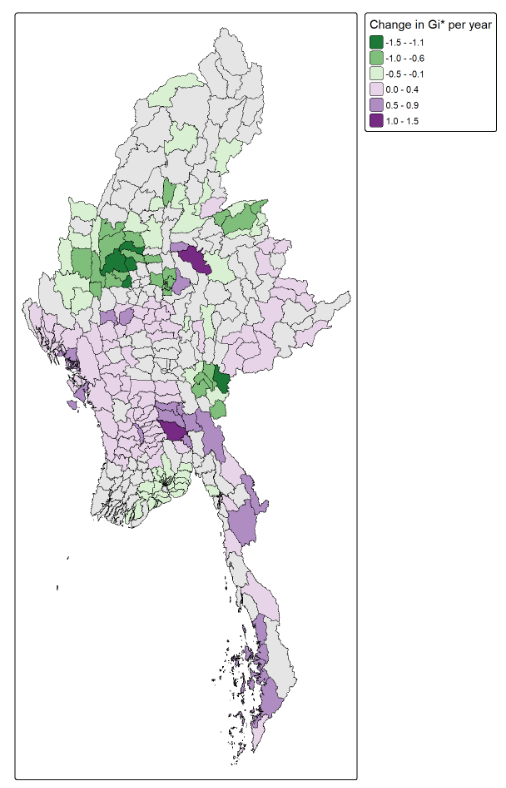
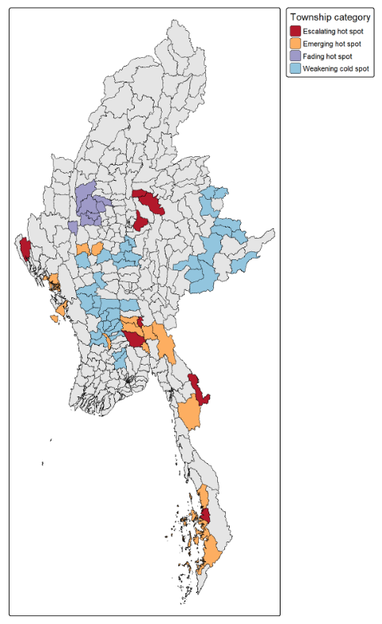

Topic: Analysing Political Violence in Myanmar
Study Area: Myanmar, 330 townships
Study Period: January 2021 to September 2025
Data: 54,284 political violence events from ACLED, mapped to Myanmar Township Boundaries, and analysed across three distinct conflict phases




| Category | Townships | Examples |
|---|---|---|
| Escalating hot spot | 8 | Kyaukme, Kyauktaga |
| Emerging hot spot | 15 | Hpapun, Ramree |
| Fading hot spot | 8 | Budalin, Salingyi |
| Weakening cold spot | 36 | Kyaukpadaung, Nattalin |

| Category | Suggested Focus |
|---|---|
| Escalating hot spot | Protection: civilian protection and humanitarian access, where need is the greatest and still rising |
| Emerging hot spot | Early warning: support and local dialogue prepared before violence becomes entrenched |
| Fading hot spot | Recovery: basic services restored, with monitoring for relapse |
| Weakening cold spot | Prevention: calm areas kept calm, with nearby violence monitored |
Limitations:
Conclusion: